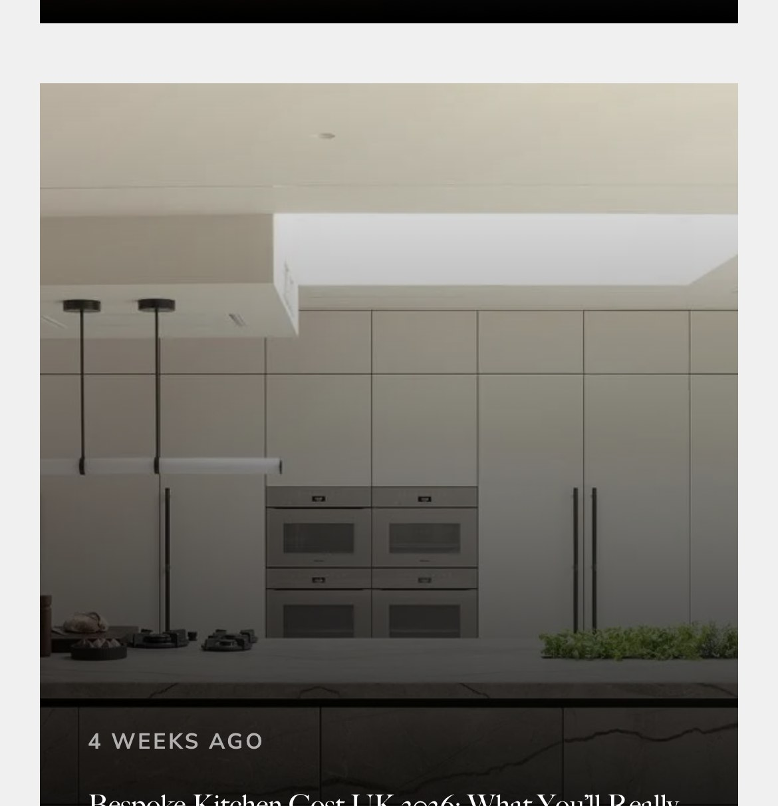
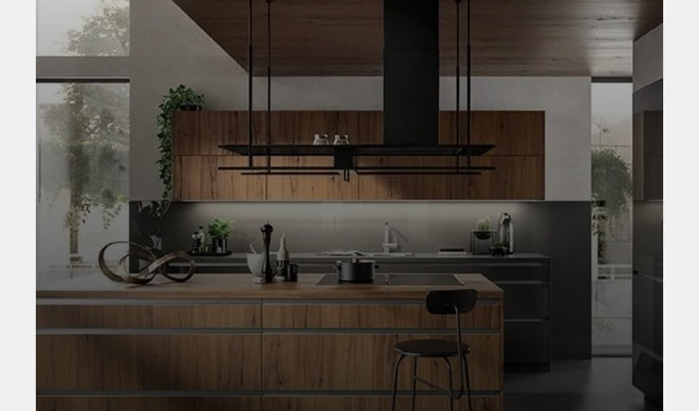

Kitchens built for the way
London lives.
We have been providing happy clients with beautifully crafted bespoke kitchens for more than 20 years — across London and beyond. Each one is designed around the home, the family, and the way people really cook.


A Victorian terrace,
reimagined.
This Victorian terrace called for a kitchen that honoured the character of the house while delivering a contemporary, family-friendly space. We developed a traditional-contemporary design finished in warm oak, with brass hardware and a hand-painted island.
Natural light was central to the brief. The layout was opened up to the garden, and cabinetry heights were adjusted to draw daylight deep into the kitchen.

Warehouse calm,
beautifully resolved.
A converted warehouse apartment. The brief was for a calm, considered kitchen that felt at home in the open-plan, double-height space without fighting the industrial architecture.
We designed an ultra-modern handleless kitchen in warm walnut with carefully chosen brass hardware as the only decorative note — bold and serene at once.
Four styles.
One standard of craftsmanship.

Traditional
Shaker-influenced cabinetry, heritage colour palettes, and hand-crafted detail. Timeless rather than dated — a considered nod to craftsmanship with modern functionality throughout.

Designer
For clients who want something genuinely individual. A wider palette of materials — unlacquered brass, tumbled stone, hand-formed concrete — always bespoke from the first sketch.
Contemporary
Clean proportions, restrained detail, and a focus on quality materials. Suited to modern extensions and open-plan spaces where the kitchen becomes a living room.
Ultra-Modern Handleless
A seamless, handle-free aesthetic that rewards close-up detail. Push-to-open mechanisms, flush doors, and precision-engineered finishes for contemporary London apartments.
25 Beautiful Homes
The UK’s leading luxury interiors publication
Come and see
for yourself.
Our showroom is the best place to understand the quality of what we do. Touch the materials, open the doors, pull the drawers. There is no substitute for seeing the craftsmanship in person.
There is no obligation when contacting us. We are here to help you think through the project, not to sell you something you don’t need.
Call 020 7284 0046
Ready to design the kitchen
you have always wanted?
There is no obligation when you get in touch. Let’s talk about your space, your style, and what is possible.
Book a Consultation Or call 020 7284 0046